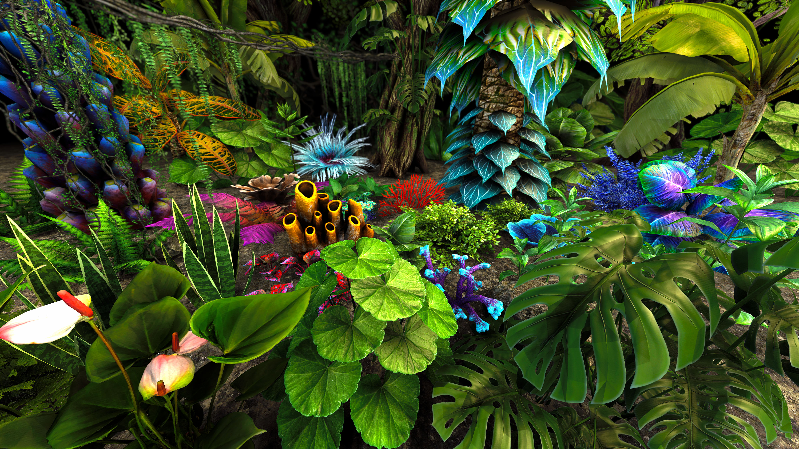
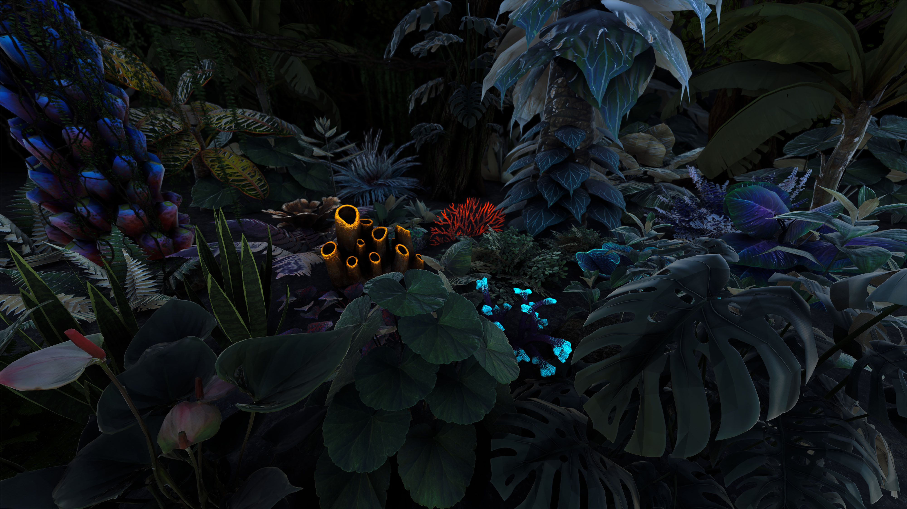

M.Sc. in Visual Arts focusing on Art and Technology development. 12+ years of experience
directing and developing
diverse projects involving Games, Animations, 3D Models, Augmented Reality, Virtual Reality,
Photogrammetry, Technical
Art, Digital Art and VFX . 6+ years as Professor of Game Design and Game Art. I´m proficient
in several softwares such
as Maya, Photoshop and Unity, besides other digital media skills such as Design, Sound and
Video editing and C#. My most
recent roles have been as Art Direction and Experience Designer for Virtual Reality.
Petrobras - VR
Art Direction, Design and Technical Artist
This virtual experience was conceived for RIO2C, one of the largest technology fairs
in Brazil, by Petrobras, the largest oil company in Brazil and in the world. In this VR,
you
operate an
interactive ROV (Remotely Operated Vehicle) to complete a mission in ultra-deep waters.
At
the end of the experience, the participants received
virtual cards of the species they managed to scan during the adventure. This VR also
included haptics and some air cooling rig to be more immersive.
I had many roles on this project as Art Director, Storyboarding with the client,
Technical
Artist, Managing Outsourced Art assets, and
making coffee.
Wildfire Explorer VR
Virtual Planet Technologies LLC
Commercial VR for global warming education and fire prevention training in
forests in California. My main roles included 3D modeling, storyboarding,
animations, particles and general FX. We used data collected from public
organizations and created some interesting things with them. The biggest challenge of
this
project
was to optimize models and shaders for Unity URP. More info here.
Paw Patrol
Client: Messier Games
3D models and animations for a game using Microsot Kinect to control Paw Patrol
characters with only
gestures. The project was created for shopping malls in São Paulo, Brazil and were a
huge
sucess at the time!
3D models
Senior
I use 3D moddeling in diverse ways, contexts and workflows having more than 10 years of
experience creating
meshes, UV mapping, textures, materials, 3D data clean, optimization and 3D printing.
I also work as Game Art professor and freelancer. You can check out
some of my models at Sketchfab.
Vikings: Beyond the Legend
Virtual Grounds Interactive
Augmented Reality project that works mixed
with the original model of a viking ship vessel, simulating the crew and
real-time movement of the ship. The project was exhibited in some science museums in
United States, such as The Franklin Institute, Philadelphia. My main role was
technical 3D artist.
Mixed Reality Experience
RIO - Volkswagen
Experience using Microfone's
HoloLens to demonstrate the logistics of
a
new service, based on
real-time information such as the availability of the fleet or internet connection.
My main
role was Art Direction, Storyboarding and 3D modeling. More info here.
Augmented Reality
Commercial projects
I produced and developed several AR projects. Some examples included clients as LACTA,
Inoh!ffice, an awarded project in the European
competition IF
DESIGN,
Darcy
and his Puppets, project selected at public service announcement contest, amoung
other projects and AR solutions.
In all
of these
projects I
created the main general concept of the product, product design, 3D art, some code and
team
management.
Mobile games
Café Gamestudio
As founder of Café Gamestudio, I direct, developed and published several mobile games.
Check
out Café Gamestudio mobile games at our Google Play page here.
New Media Art exhibitions
Forest
The flora of a real time virtual forest-garden, full of recognizable, affective and alien
plants disappears over
time, as it perceives the proximity of some human presence. If the detection process is
prolonged, at the end of the
process, there is only the silence of the Cartesian plane that forms the infertile soil,
reinforcing the artificiality
of the simulacrum. If no human presence is detected, the flora gradually recomposes
itself.


Dataviz in Unity
Visual data experiment performed using data obtained from Our
World in Data
about COVID-19 pandemic in Brazil. More info here.
R.E.A.L. - Interactive installation selected at FILE - Electronic Language
International Festival - São Paulo.
Catalog and more info.
Thank you for visiting
| thiago.coser@gmail.com